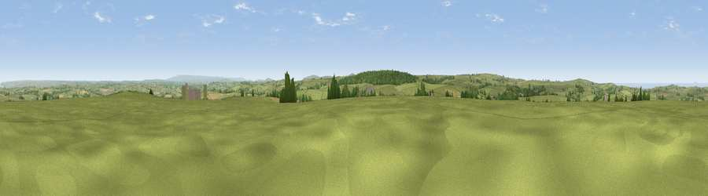

Viewpoint near Warbstow
#6781 in England · top 12% of its area beats it · near WarbstowWhere it is
The exact computed spot (SX 19475 90438). Click the marker for map links.
The view, rendered

A 360° render of this exact spot computed from the terrain model, tree cover and land cover — summer colours, afternoon light, calibrated against photographs of famous viewpoints. Real trees, hedges and buildings will differ in detail.
The panorama
Grey silhouette: terrain skyline in each direction (720 bearings, Earth curvature and refraction included). Dashed green: skyline with trees (+15 m) and buildings (+8 m) as obstacles. Blue strip: how far the ground is visible on each bearing.
Where the view opens
Wedge length = distance to the farthest visible ground on that bearing (vegetation-aware). Rings at 10, 25 and 50 km.
What fills the view
81% grassland · 9% woodland · 6% cropland · 2% water ·
Angular shares of the visible panorama (visual magnitude), not map area. Landscape diversity 0.30 (0–1 Shannon).
Key numbers
More beautiful places nearby
The staircase of upgrades: each row has a higher view potential than everything closer. Driving times are estimates from straight-line distance, calibrated against real road routing — check an actual route before setting out.
| Place | Direction | Drive | Score |
|---|---|---|---|
| Viewpoint near Warbstow | ENE · 1 km | ~2 min | 71.2 |
| Tresparrett Down | WNW · 7 km | ~14 min | 80.8 |
| Viewpoint near Lesnewth | WNW · 7 km | ~15 min | 87.7 |
| Viewpoint near Crackington Haven | WNW · 7 km | ~15 min | 88.1 |
| Viewpoint near Combe Martin | NNE · 70 km | ~93 min | 88.9 |
| Holdstone Hill | NE · 71 km | ~95 min | 90.2 |
| The Knoll | E · 134 km | ~158 min | 91.0 |
50.68551, -4.55691 · source: screening · position refined by local search. Computed location — check access rights before visiting.